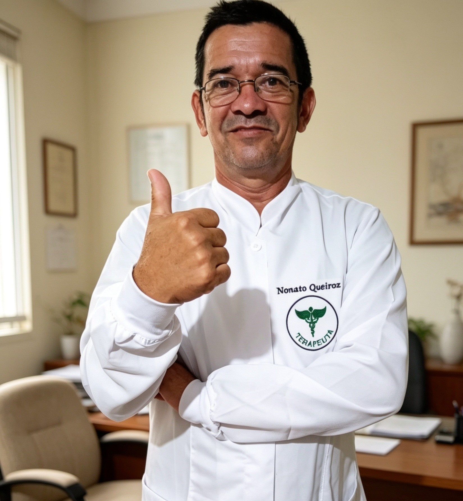

Tem se sentido cansado(a), como se não tivesse dormido à noite? Talvez você precise de uma consulta com um profissional da psicologia.
Cerca de 20% a 25% da população mundial (OMS e JAMA Psychoatry, 2024-2025) já procurou apoio psicológico pelo menos uma vez na vida. Nem todos achavam que tinham algumas divergências, mas, talvez, quisessem alguém para conversar ou estivessem em uma fase ruim.
Por isso, ir a uma consulta com um profissional não significa, necessariamente, que você tenha ou não algum distúrbio psicológico. Fazer acompanhamento psicológico é importante pois não se trata unicamente de tratamento de doenças neurais, mas uma espécie de check-up de sua mente.
•Agrava problemas pequenos.
•Pode afetar a saúde fisíca.
•Prejudica os relacionamentos do indivíduo.
•Ajuda a obter autoconhecimento.
•Ajuda a lidar com estresse e ansiedade.
•Serve para evoluir como pessoa.
•Aprende a lidar com problemas.
É importante procurar os melhores profissionais que possam lhe auxiliar no entedimento dos seus sentimentos, da vida e dos desafios que ela pode trazer.
O Terapeuta Dr. Nonato Queiroz reconhece que nem todos podem pagar caro por uma consulta, e é pensando no seu bem-estar que ele oferece um orçamento acessível para os clientes. Ele deseja ajudar a todos, porque nada para ele é melhor do que trabalhar com o que ama.

Agende já uma consulta e descubra o lado bom da vida e desperte seu potencial.
Clique Aqui